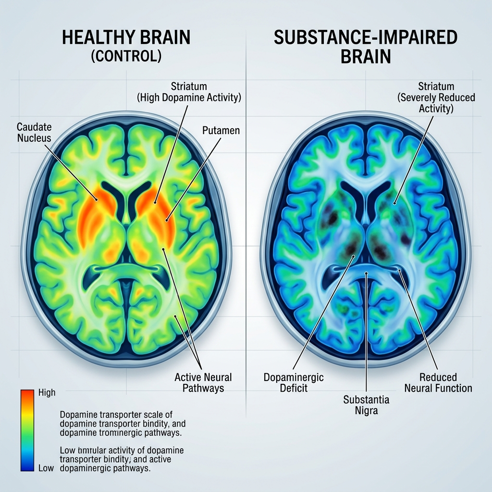
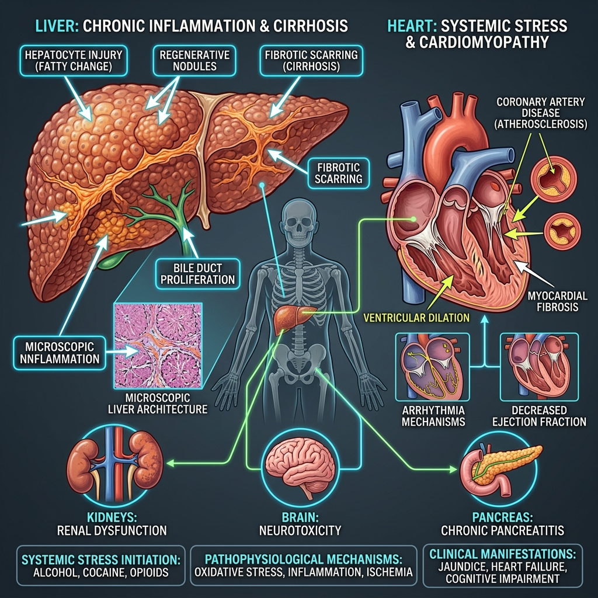
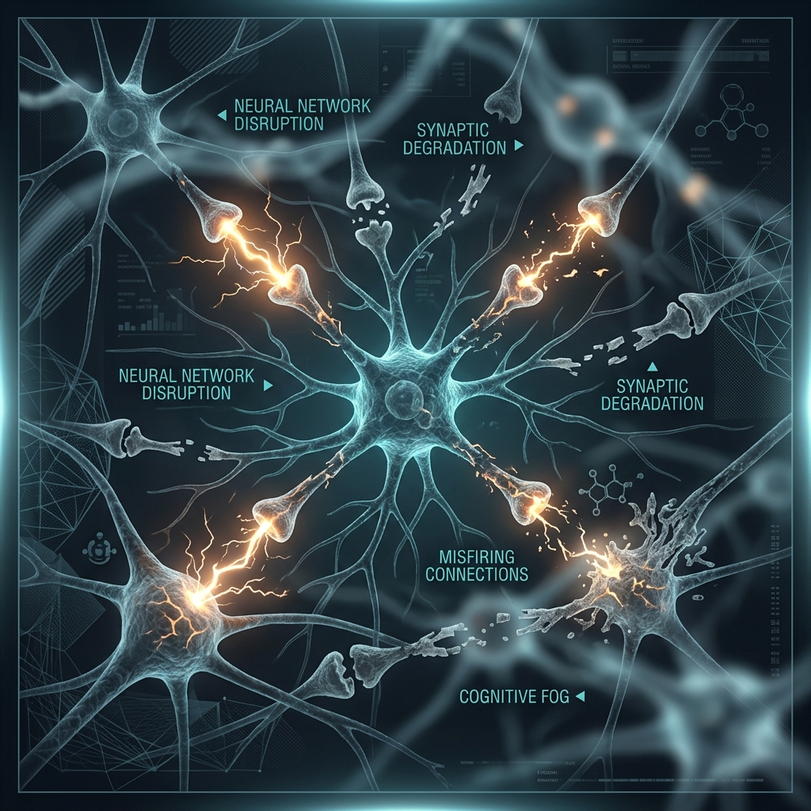

Access immediate psychological triage, diagnostic self-evaluations, and a nationwide directory of medically vetted rehabilitation facilities. Strict data non-retention protocols are active.
Verified Care Centers
Unlogged Anonymity
AI Triage T.A.T.
Clinical Protocols
Our platform incorporates standardized medical protocols ensuring absolute patient confidentiality and validated intervention frameworks.
Engage with clinical AI triage agents anonymously. We employ strict non-retention policies; no PII or logs exist.
Facilities listed undergo rigorous auditing for adherence to psychiatric care standards and ethical medical staffing.
Monitor neurological recovery and abstinence durations. Visualizing physiological milestones improves dopaminergic regulation.
Review audited independent rehabilitation hospitals and specialized detoxification wards.
Initiate a structured psychiatric self-screening. Your responses dictate immediate triage recommendations.
A short, interactive mini-game to help your clinical team understand how your brain is processing information today.
Understand the physiological impact of substance dependency and explore proven relapse prevention strategies.
How narcotics rewrite neural pathways and alter dopaminergic responses in the brain.
Evidence-based psychological anchors and coping mechanisms to maintain physiological recovery.
Clinical visual data demonstrating the adverse neurological and systemic effects of prolonged substance use.

Comparative scan demonstrating severe reduction in neural activity and receptor availability.

Anatomical breakdown showing inflammation, cirrhosis, and acute cardiovascular strain.

Disrupted neural networks leading to profound cognitive fog, memory loss, and delayed processing.
Talk directly to our clinical assistant to book your consultation. Our agent will guide you through the process step-by-step.
"How may I help you today?"
Our voice agent will help book your slot. Please select the doctor you wish to consult.
Addiction Psychiatrist
15+ years experience in severe dependency management.
Clinical Psychologist
Expert in CBT and trauma-informed recovery.
De-addiction Specialist
Specializes in detox protocols and withdrawal management.
Behavioral Therapist
Focuses on family counseling and relapse prevention.
Neurologist
Evaluates neurological impact and prescribes medical recovery paths.